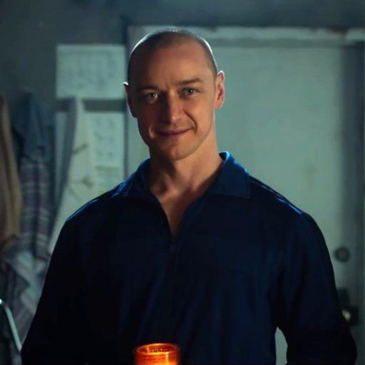

KEVIN WENDELL-CRUMB

Es un hombre que sufre del Trastorno de Identidad Disociativo, por lo que además de su personalidad original tiene otras 23. Cuando era niño, su padre murió en el accidente de tren que Mr. Glass provocó y quedó a cargo de su inestable madre, quien abusó física, verbal y emocionalmente de él, tanto que Kevin tuvo que crear otras identidades para protegerse de ella.
LA BESTIA

Esta es la última y más aterradora personalidad de Kevin. Es una especie de hombre sobrenatural, extremadamente violento, que come carne humana. Para ‘La Bestia’, todo aquel que no ha sufrido en su vida es una persona impura y debe ser sacrificada. Esta identidad puede desgarrar barras de metal, quebrar cuerpos humanos con sus propias manos, escalar paredes y es increíblemente difícil de matar, pues las balas y cuchillos se rompen cuando tocan su piel.
JADE
‘Jade’ apareció por primera vez en un archivo de video que Casey encontró en la computadora de Kevin en “Fragmentado”. Es una joven coqueta que tiene que aplicarse inyecciones de insulina para la diabetes. Aparece brevemente en “Glass” cuando un enfermero le trae una bandeja con sus inyecciones y ella intenta seducirlo para apuñalarlo y escapar.
BARRY
Es una de las personalidades que tuvo más protagonismo en “Fragmentado”. ‘Barry’ se comunicaba con la Dra. Fletcher y tenía el poder de decidir qué personalidad debía salir y en qué momento. Este poder lo tuvo hasta que ‘Patricia’, ‘Dennis’ y ‘Hedwing’ se apoderaron de la mente de Kevin. Se sabe que es carismático, algo afeminado y con gran talento para la moda y el diseño.
IAN Y MARY REYNOLDS
No se llegan a desarrollar mucho estas personalidades, pero en “Glass” se puede ver a ‘Mary’ como una mujer bastante coqueta que intenta enamorar a sus guardias en el hospital mental para poder escapar. Al parecer, tanto ella como su hermano ‘Ian’ son capaces de ocupar simultáneamente la luz, tienen acento irlandés y se critican mutuamente.
ORWELL
‘Orwell’ aparece brevemente en “Fragmentado” cuando Casey llama a Kevin a la luz y se muestra como un hombre introvertido y altamente inteligente. Posteriormente, en “Glass” se revela que es un profesor universitario de literatura, quien asegura que no está a favor de dejar que ‘La Bestia’ se haga cargo.
NORMA
‘Norma’ se presenta a sí misma en “Glass”, ella es una mujer sureña educada con un acento grueso.
LUCAS
Otra de las identidades que aparecen en “Glass” es ‘Lucas’, quien solo alcanza a decir algunas cosas. Asegura que es parte de ‘La Horda’ que se creó a partir de las personalidades de Kevin.
SR. PRITCHARD
Es un profesor que se especializa en cine japonés y tiene una breve aparición en “Glass”.
HEINRICH
En uno de los muchos ciclos de luz de Kevin, aparece la voz de ‘Heinrich’, un hombre alemán.
LUKE
‘Luke’ es una personalidad basada en el editor de las películas “Fragmentado” y “Glass” Luke Ciarrocchi, quien es conocido dentro del equipo por su mala costumbre de spoilear el final de las películas. ¿Por qué? Bueno, resulta que al igual que la persona en la que esta inspirado ‘Luke’ no puede guardar secretos.
KAT
‘Kat’ es una personalidad femenina de la que no se puede saber mucho, ya que un destello de luz le impide controlar a Kevin.
MUJER LATINA
En una escena de “Glass” emerge una personalidad femenina que habla español y a la que se le escucha muy asustada por los planes de ‘La Horda’; y aunque no se sabe quién es, podría tratarse de ‘Felicia’ o ‘Rakel’.
GODDARD, BERNICE, POLLY, ANSEL, JELIN, B.T. Y SAMUEL
El resto de las personalidades tienen una breve aparición en “Glass” cuando se cambia la luz del cuarto en el que Kevin se encuentra recluido, pero no hay forma de reconocer quién es quién.
Sin duda, las 24 personalidades de Kevin son todo un enigma, capaces de engañar a cualquiera, pero ninguna tan fuerte y temible como ‘La Bestia’.
No te puedes perder por nada del mundo nuestro estreno Platinum “Glass” este domingo por la señal de Azteca 7.